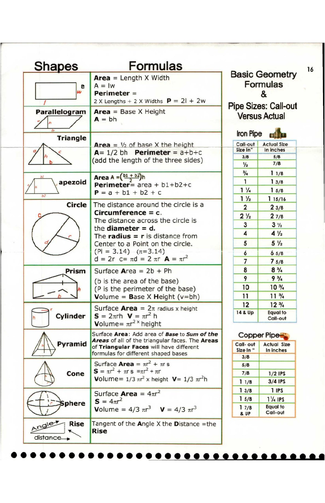

16. Pipe Sizes and Basic Math Formulas

Shapes Formulas ; 6
Area = Length X Width Basic Geometry
e |A=Iw Formulas
” | Perimeter = &
2 X Lengths + 2 X Widths P = 2] + 2w 7 ‘i
sale ram | Area = Base X Height Pipe Sizes: Call-out
Triangle : iron Pipe ea =
= : _____| Area = 1% of base X the height __ Call-out | Actual Size
y < A= 1/2bh Perimeter = a+b+c [Sieain” [ ininches
(add the length of the three sides) iy 7/8 1
: 2 1
| % Liye
be _, | Area A =(%+22)h I |
| Perimeter= area + bl+b2+c 1 13a)
“= P=a+bl+b2+c iB |
- , 5 lh lisns |
Circle | The distance around the circle is a 2 23/8 |
c Circumference =c. ; ; 2% 27/8
The distance across the circle is 3 a, ]
the diameter = d. 7
The radius = r is distance from 4 4h |
, > Center to a Point on the circle. |_§ 5% |
(Pi = 3.14) (m=3.14) 4 65/8
d=2r cend=2ar A=nxr 7 75/8 |
Prism | Surface Area = 2b + Ph Ls 8%
ee (b is the area of the base) joot 9%
(P is the perimeter of the base) 10
b Volume = Base X Height (v=bh) [11
c= Surface Area = 2r radius x height mu A 2
Cylinder | S = 2arh V=ar7h eT eeee il
Volume= xr?” height aes aii
Surface Area: Add area of Base to Sum of the Copper Pipe
+4 |Areas of all of the triangular faces. The Areas
[\yrremi of Triangular Faces will have different
formulas for different shaped bases ry a m inches
2
Surface Area = ar? + ars [ se |
cone |S= 7 + as =n +r .
Volume= 1/3 ar’ x height V= 1/3 arth
TS,
Sphere | S = 4xr .
ae, Volume = 4/3 xr? V= 4/3 ar
= \e¥ ; Rise |Tangent of the Angle X the Distance =the
oes PX [Rise
distance_»
©0000 0888 0880080 O